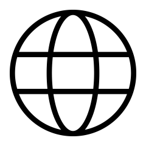

Adres e-mail:
Adres e-mail: Numer telefonu:
Numer telefonu:O mnie
Mam na imię Jan! Jestem studentem dziennych, magisterskich studiów prawniczych na Uniwersytecie Kazimierza Wielkiego w Bydgoszczy. Wcześniej ukończyłem studia licencjackie na kierunku prawno-ekonomicznym realizowane przez Uniwersytet Ekonomiczny oraz Uniwersytet im. Adama Mickiewicza w Poznaniu. Charakteryzuje mnie życzliwość i charyzma, które pomagają mi w budowaniu dobrych relacji.
Doświadczenie zawodowe
- Listopad 2021 - Wrzesień 2023: Sprzedawca Vorwerk
- Czerwiec 2021 - Sierpień 2023: Ratownik WOPR
Wykształcenie
- Październik 2021 - lipiec 2024: Uniwersytet Ekonomiczny oraz Uniwersytet im. Adama Mickiewicza w Poznaniu, kierunek: prawno-ekonomiczny
- Październik 2024 - obecnie: Uniwersytet Kazimierza Wielkiego w Bydgoszczy, kierunek: prawo
Zainteresowania
 Nauka języków obcych
Nauka języków obcychWeb development
Kulinaria